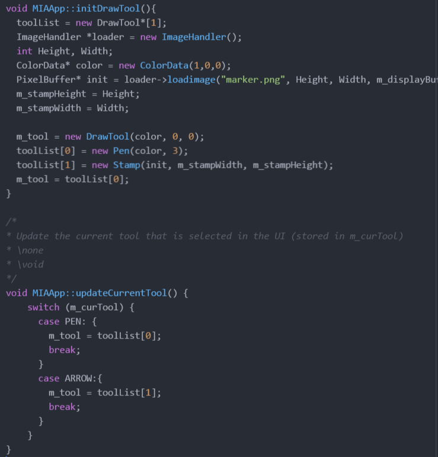
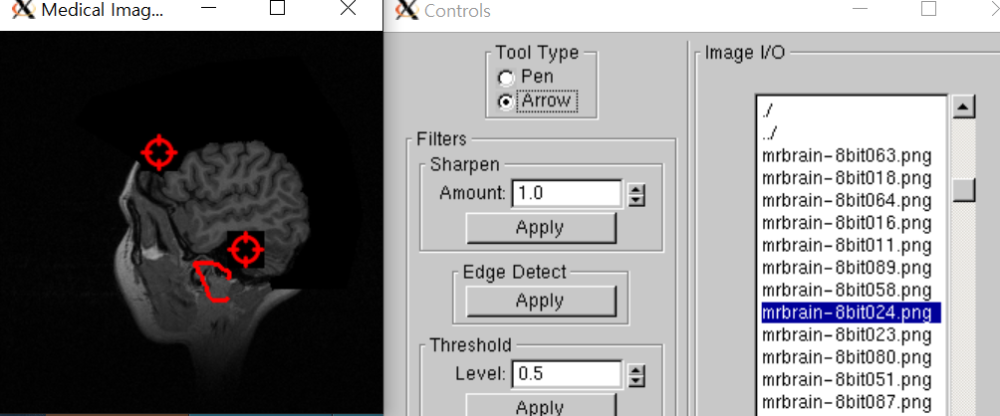

Iteration 3
The part of iteration 3 that I wrote that I tried to put effort on was the Mia. Mia can be used to apply every filter FlashPhoto previously supports to single image file or stack of image files, and also, it has command line mode without opening GUI. Since Mia is used for medical image analysis, it will usually deal with a stack of CT image files. Thus, both modes will be very useful to analyze and handle medical images effectively.
 This snippet is the code from MIAAPP.cpp, which I refactored and implemented every functionality for Mia. I hardcoded the pen tool to be red pen tool by passing red RGB color which is useful for annotating medical images. Also, I hardcoded the stamp function to make arrow tools to only stamp given arrow marker.png file.With this hardcoded stamp tool, I was able to make a red arrow tool for annotating medical images. By hardcoding some functionality into Mia, Mia will contain a subset of tools and filters which are supported by FlashPhoto.
In this way, these subset tools contain hardcoded image pixel buffer from marker.png which is given the file, and ready to stamp a red arrow on the image file based on mouse pointer. Also, the pen tool will be initialized as the red pen to be useful for annotating medical images. This screenshot is the result of running Mia's arrow and pen tool.
